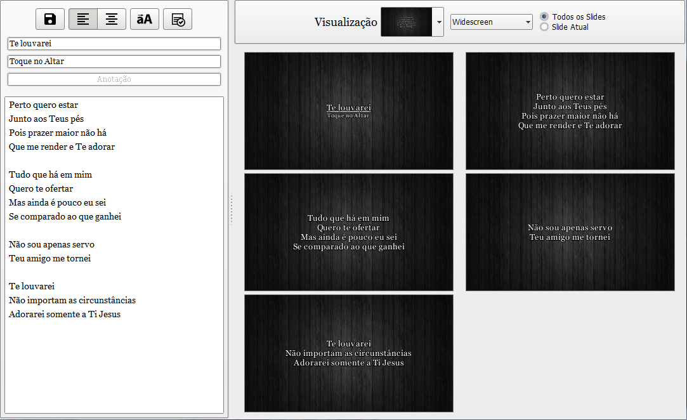
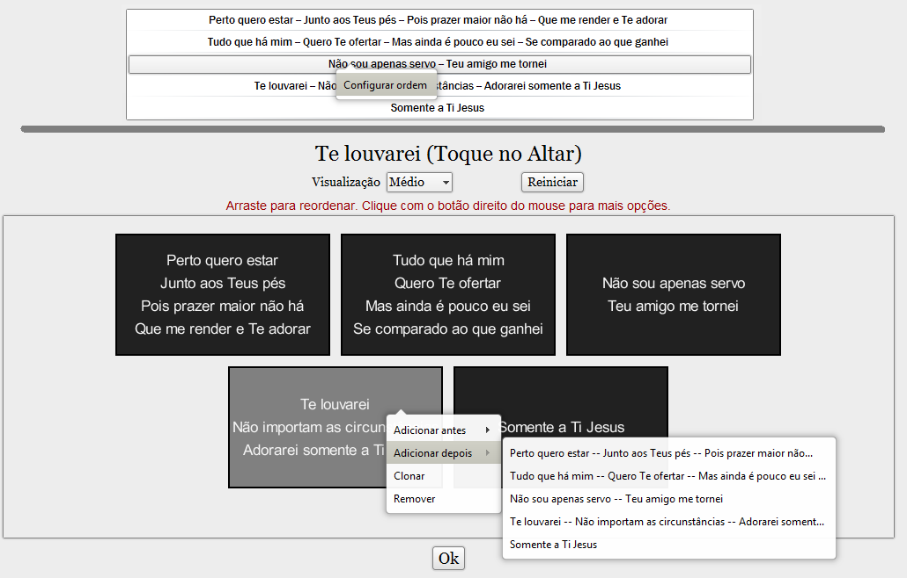

Utilize o arquivo Música para salvar a letra, o nome e o cantor das músicas, e também alguma anotação sobre ela.
As possíveis informações para uma música:
- Título: Nome/título da música;
- Artista: Nome do artista/banda/ministério/grupo;
- Anotação: Inserir qualquer anotação e/ou observação sobre a música que precisar;
- Letra: Letra da música.
Você pode inserir tags no campo Anotação para facilitar a busca de letras específicas (Ex.: #ceia, #oferta, etc).
Pode também utilizar o campo para anotar um link, o tom da música, etc...
Utilize uma linha em branco para separar os parágrafos/slides.
Guarde o Histórico de exibição das músicas sempre que ela for tocada.
Exiba a letra com Temas personalizados.
Adicione músicas novas rapidamente utilizando a pesquisa pela internet ou pelo nosso banco de dados off-line:
- Pela internet:
- Pesquisa pelo nome da música;
- Utiliza o banco de dados atualizado disponibilizado pelo site http://www.vagalume.com.br/;
- Pelo banco de dados off-line:
- Pesquisa pelo nome da música e/ou artista e/ou pelo trecho da música;
- Utiliza nosso banco de dados local com mais de 14 mil músicas disponíveis;
Para uma maior praticidade, não é necessário repetir parágrafos da letra da música.
É possível duplicar e reorganizar cada parágrafo/slide da música (na janela principal) sem precisar editar a letra.
Na janela de criação/edição é exibida uma pré-visualização dos slides com o tema selecionado.
O tema selecionado é apenas para auxiliar na formatação dos parágrafos. Na janela principal você pode escolher qualquer tema para qualquer música.
Cada parágrafo separado por uma linha em branco corresponde a um slide diferente.
O alinhamento do texto (à esquerda ou centralizado) não influencia na exibição da letra, servindo somente para auxiliar na formatação dos parágrafos. O alinhamento do texto é alterado no Tema.

